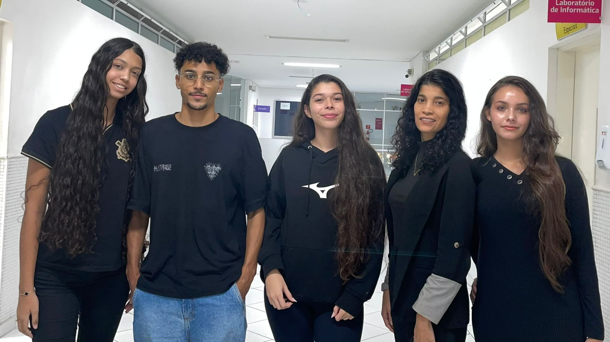

O nome Ayvy nasce da inspiração na palavra “ivy”, que em inglês significa hera — uma planta marcada pela sua força silenciosa, capacidade de adaptação e crescimento constante. Mesmo começando pequena, a hera encontra caminhos, se fixa com firmeza e alcança grandes alturas, independentemente dos obstáculos ao redor. Essa essência traduz exatamente o propósito da Ayvy. Assim como a hera, acreditamos no potencial de crescimento de quem está começando, principalmente dos pequenos empreendedores que, muitas vezes, enfrentam limitações de estrutura, visibilidade e recursos no ambiente digital. Nosso objetivo é ser o suporte que sustenta esse crescimento: oferecendo direção, estratégias e ferramentas que permitam que esses negócios se desenvolvam de forma sólida e sustentável. A Ayvy não é apenas uma marca, mas um ponto de apoio. Queremos ajudar cada empreendedor a criar raízes fortes no digital, se adaptar às mudanças do mercado e, principalmente, crescer de forma consistente, expandindo seu alcance e conquistando novos espaços. Porque, no fim, não importa onde você começa — o que importa é até onde você pode chegar quando tem o suporte certo.
Responsável pela criação das APIs do sistema, assegurando a comunicação eficiente entre o Front-End e o banco de dados. Atuou também na organização e estruturação da lógica da aplicação, contribuindo para o desempenho, escalabilidade e funcionamento adequado do sistema.
Responsável pelo desenvolvimento do banco de dados do projeto, participando da definição da arquitetura, da estruturação e da organização das informações, além de zelar pela consistência, confiabilidade e segurança dos dados. Contribuiu para a criação de uma base eficiente, garantindo o bom desempenho do sistema e o suporte adequado às funcionalidades da aplicação.
Responsável pela organização, elaboração e revisão da documentação do projeto, garantindo clareza e padronização das informações. Atuou também no apoio ao desenvolvimento do Front-End do aplicativo mobile, contribuindo na criação de interfaces e na melhoria da experiência do usuário.
Gerente de Frontend Responsável por impulsionar o desenvolvimento da plataforma AYVY, unindo técnica e design para criar interfaces que saltam aos olhos. Atua diretamente na construção de sistemas inteligentes, focando sempre em entregar uma navegação fluida, visual moderno e uma experiência que faça sentido para quem usa.
Responsável por apoiar o desenvolvimento e a implementação do Front-End da tela de perfil do cliente, contribuindo para a organização das informações, melhoria da usabilidade e aprimoramento da experiência do usuário. Atuou também na padronização dos elementos visuais, na adaptação da interface para diferentes dispositivos e na validação de funcionalidades, visando garantir uma navegação intuitiva, acessível e alinhada às necessidades do sistema.”

Equipe AYVY reunida — Colaboradores Extras: José Neto e Pedro Talles